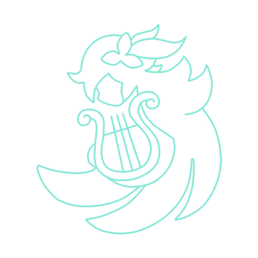
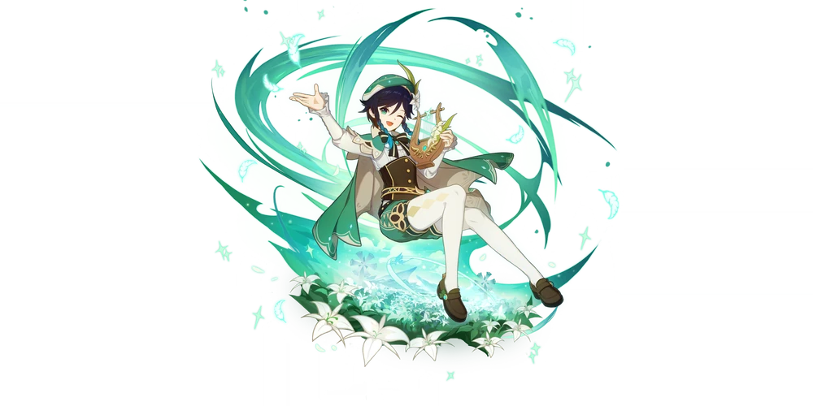
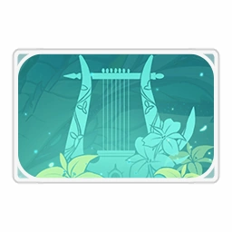

Венти
Неведомые ветра привели барда в наши земли. Порой его песни стары как свет, а иной раз он играет современные произведения. Любит яблоки и живую фтмосферу, не любит сыры и все липкое. Когда он управляет ветрами, его Анемо сила проявляется в виде перьев. Венти привлекает их лёгкость и беспечность.
Регион: Мондштадт
Стихия: Анемо
Оружие: лук
Созвездие: Бог Песен
Созвездие персонажа
Выпадение персонажа
Карточка персонажа
О персонаже:
Неведомые ветра привели барда в эти земли. Порой его песни стары как свет, а иной раз он напевает ещё ненаписанные строки. Он любит яблоки и живую атмосферу, но не любит сыры и всё липкое. Когда он управляет ветрами, его Анемо сила проявляется в виде перьев. Венти привлекает их лёгкость и беспечность.
История 1(ур др 2):
Венти поселился в Мондштадте совсем недавно, и его заработок был намного ниже остальных бардов-мондштадтцев. Но завидев достаточную сумму в горшочке, будьте уверены, Венти потратит её в ближайшей таверне. Но несовершеннолетний облик Венти не позволяет ему купить алкоголь. Когда ему отказали в первый раз, Венти только пробормотал что-то вроде: «А вот раньше таких правил не было...» Но когда он узнал, что подобное правило установлено во всех тавернах города, Венти придумал новый план... Вместо того, чтобы просить за свои выступления мору, Венти зажимал в зубах бокал одновременно играя на лире и просил своих зрителей подливать ему вино. Такие нововведения добавили ему популярности в Мондштадте. Однако главной причиной срывов выступлений была его аллергия на кошек. Он начинал неистово чихать даже при одном их виде и надеялся, что рядом не будет проходить кошки, когда он будет выступать с зажатым в зубах бокалом вина. Поэтому Венти для своих выступлений выбирает места подальше от пушистых, но каким-то образом бездомные коты тянутся к нему даже с других концов города.
История 2(ур др 3):
В центре долины Ветров возвышается огромный дуб, который, согласно легенде, был посажен Веннессой, давным-давно вознёсшейся на Селестию. Уже несколько месяцев отдыхающие у дуба путешественники слышат мальчика, поющего легенды об Анемо Архонте Барбатосе. В отличие от большинства других Архонтов, правящих соседними королевствами, Барбатос давно покинул Мондштадт. Всё, что осталось от него, - статуи, лишь отдалённо его напоминающие. Но к счастью, его прошлые деяния сохранились в книгах и эпических балладах, поколениями воспеваемых бардами. Однако в отличие от каноничных произведений, рассказывающих о подвигах Архонта, Венти поёт про Барбатоса немного иные вещи. Зачастую его песни повествуют о странных приключениях и озорстве. К примеру, он рассказывает, как Барбатос однажды украл скипетр Крио Архонта, подменив его дубинкой хиличурла... Это весьма задевает верующих в Архонта горожан, но, сталкиваясь с обвинениями, Венти отвечает без зазрения совести: «Откуда вам знать, правда это или нет?» И с этим нельзя спорить, ведь даже самым посвящённым сёстрам не известно, что на самом деле происходило с Барбатосом тысячелетия назад. И за загадочной улыбкой Венти скрывает правду о том, что все его басни - выдумка. Но разве можно винить его за ту музу, что приходит после пары бокалов вина?
История 3(ур др 4):
Около двух тысяч шестьсот лет тому назад ещё гремели Войны Архонтов, а семи Архонтам только предстояло установить свою власть над миром. В те времена город под названием Мондштадт окружали ураганы, непреодолимые даже для птиц. Нескончаемый ветер перемалывал городскую землю и камни в мельчайшую пыль. Владыка ветра, Бог бури Декарабиан, восседал в своей высокой башне. С презрением смотрел он на своих подчинённых, которые сгибались от нескончаемого ветра, и радовался их видимой покорности. Венти тогда был всего лишь струйкой среди ревущих над землями севера ветров. Тот, кого позже будут величать Барбатосом, был мелким элементалем без намёка на божественное величие, ветерком, приносившим едва заметные перемены к лучшему или крохотные семена надежды. В древнем Мондштадте Венти повстречал юношу. Юноша тот играл на лире и жаждал писать самые лучшие стихи. «Я так мечтаю увидеть птиц». Молвил он, рождённый в стенах ветра, из-за которых не видно было ни синего неба, ни орлов, ни зелёной травы. Слова его заглушал вой ветра. «Почему бы тебе не пойти со мной, друг?»
История 4(ур др 5):
Для юноши, который родился в объятом ветрами городе и никогда не видел птиц, элементаль Венти добыл орлиное перо. Позже в Мондштадте разразилась война за свободу. С пером за пазухой Венти вместе с другом наблюдал, как в дыму восстания своенравному тирану приходит конец. Правитель считал, что оградил своих подданных от холодов, и ему казалось, что они любили его не меньше, чем тот любил их. Но даже после победы Венти отдать юноше перо не смог, ведь он погиб в борьбе за песни, небо, птиц и людей, живших в стенах из ураганов. С падением старого божественного трона родился новый бог. Анемо Архонт Барбатос чувствовал, как переливается сила на кончиках его пальцев. С помощью этой силы он первым делом переродился в обличье того юноши. Ведь на лире, которую юноша так любил, играть он мог только приняв форму человека. Перебирая струны, он божественным ветром разогнал лёд со снегом и расколол горы. Новому Мондштадту он велел стать городом свободы, страной без короля. Со временем он станет прекрасным, полным романтики городом. «Ему тоже хотелось бы жить в таком месте». Так для Мондштадта началась новая эпоха.
История 5(ур др 6):
Не всё в Мондштадте сотворено Анемо Архонтом.
Сейчас я вознесу похвалу о том, как прекрасно всё сущее...
Хвала западному ветру за вечную ласку,
Цветам за прекрасную весеннюю сказку,
Зяблики, утки, кроли, кабаны,
Равнины Мондштадта, что жизни полны.
Бродит лев средь зелёных лугов,
Такой он красавец, что других нету слов.
Жаркая грива солнца видна,
Потому так приятна прохлада вина.
Тонкая тропка меж гор ковыляет,
По ней ветер восточный не ходит - летает.
Полями, садами он низко пройдёт,
Запахи фруктов он нам принесёт.
Северный ветер дремлет в лесу,
А серые волки ходят внизу.
Анемо Архонту известно, что он
Увидит чудный, ласковый сон.
Времена года друг за другом идут,
И эти ветра никогда не умрут.
Главная роль в этой песне - моя,
Ведь кто её спел бы, если не я?
Заговор против ветра
Спустя тысячу шестьсот лет после основания свобода из Мондштадта почти что исчезла. Барбатос, не желая становиться тираном, ушёл. Но он представить себе не мог, что наделённые свободой люди создадут себе тирана сами. Жестокие, глухие до криков угнетённых аристократы, которые правили Мондштадтом, принесли на эту землю рабство. Через тысячу шестьсот лет Анемо Архонт вернулся в бывший Город Свободы. Он услышал крики рабыни Веннессы, и вместе они начали свергнувшее аристократов восстание. Всё вышесказанное - каждому знакомая официальная история Мондштадта. Но об одном небольшом, но крайне любопытном эпизоде почти никому не известно. Людей в борьбе за Мондштадт и правда объединила Веннесса, но многие солдаты восстали против аристократов из-за «Заговора против ветра». По этой предательской сделке правящая аристократия отрекалась от ветра и продавала всё в Мондштадте Гео Архонту из соседнего королевства. Скрепляла её печать, какую не могло выгравировать ни одно божество, кроме Властелина Камня. Угнетавших рабов солдат бросало в дрожь от мысли, что им уготована судьба невольников на чужой земле. Весть об этом, а также конфликт, распространились подобно степному пожару, который поглотил аристократию. Лишь много лет спустя историки обнаружили, что сделка эта была ненастоящей. Оказалось, что Венти хотел разыграть Гео Архонта, и поэтому упражнялся в подделывании подписей, но провести бога торговли и богатства так и не сумел. Тем не менее его бесполезное мастерство наконец проявило себя через несколько сотен лет. Какое отрадное совпадение.
Глаз Бога(ур др 6):
Семеро Архонтов обладают великой силой, поэтому Глаза Бога им ни к чему. Но Барбатос очень привязался к миру смертных и хотел свободно путешествовать по Мондштадту в обличье «Венти», поэтому он и создал стеклянный шар, внешне ничем не отличавшийся от Глаза Бога. Особых функций эта подделка не имела, и в использовании элементальных сил Венти обходился без неё. Но поскольку Венти вечно ленится носить с собой Небесную лиру, он наделил поддельный Глаз Бога способностью превращаться в обычную деревянную лиру.